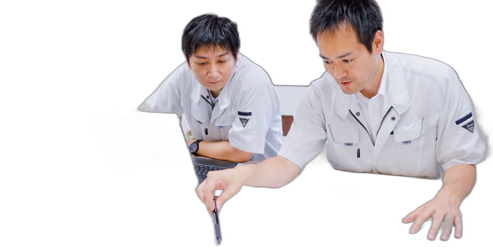
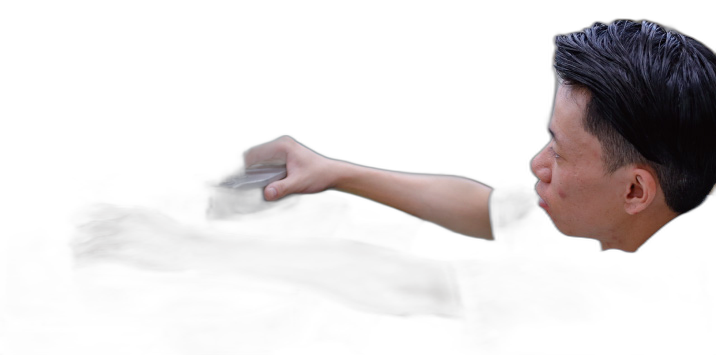
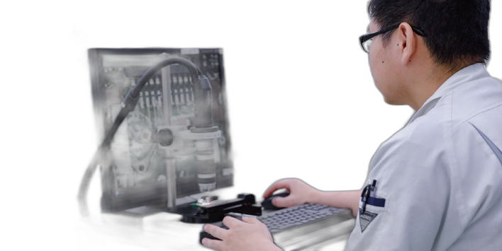
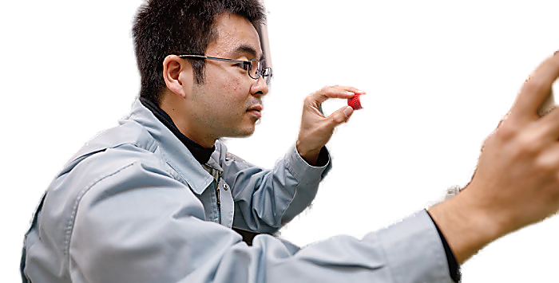

サンプロシステムで働くメンバー一人ひとりの"想い"と職場の空気感をお伝えします。仕事内容、職場の雰囲気、今後のチャレンジ──それぞれの言葉から、私たちの会社の姿を感じていただければ幸いです。


お客様のご要望をお聞きして、ニーズに合ったご提案をし、設備の仕様や全体プランを決めて技術者にバトンを繋ぎます。コスト管理、納期調整、外部交渉など、広範囲の調整業務を担当しています。
家族との時間を大事にしながら安心して働ける会社です。個人事業主感覚で自分の仕事も時間も管理できます。福利厚生が充実し、保険サポートも手厚いのが心強いです。

交渉力・調整力を磨き、発想力を高めたいと考えています。昆虫好きで生物模倣に関心があり、生物の構造を模倣してシンプルかつ複雑な動きができる設備設計を目指しています。

3次元CADで機械設備の設計を担当しています。完全オーダーメイド製品なので、お客様のご要望や設置環境を考慮し、使う人の目線に立った使い勝手を重視しています。
部品選定や発注、納期管理も社員の裁量で任せられます。決断には不安もありますが、任せてもらえるからこそ、より多くを吸収できると感じています。

社内初の産休・育休を取得し、現在も時短勤務で子育てと両立しています。男女問わずワーク・ライフ・バランスを保ちやすく、育児に積極的な男性社員が多いのも特徴です。
社長からは「仕事の代わりはいるけど、母親の代わりはいない」とサポートのお言葉をいただきました。


機械生産ラインの装置設計を担当しています。前職（造船設計）では稟議を上げて決められた流れで仕事をしていましたが、ここでは最初から最後まで自分の力量で仕事を任せてもらえます。責任は大きいですが達成感も大きく、成長に繋がります。
わからないことを聞けば先輩が気軽に指導してくれます。セミナー参加など学ぶ機会も積極的に提供してもらえます。週2回の社内英会話教室（自由参加）もあり、海外出張が多いので英語も役に立ちます。釣りやテニスなど仕事外でのコミュニケーション活動も盛んで、アットホームな雰囲気です。

機械設計だけでなく、制御・ソフト設計も学び、両方を関連づけた設計ができるマルチな技術者を目指しています。


オーダーメイド製品の制御設計を担当しています。お客様の要望を探りながら、実際の使用を考えてプログラムします。要望をどう形にするかは自分に任されており、やりがいと重責を感じます。期待・信頼してもらえることが、何より嬉しいです。
制御設計のほか、社会貢献事業として「子どもロボット教室」の講師も担当しています。小学生〜中学生に、現場で使う高度な技術を体験してもらっています。自分が作ったものが動く楽しさを、子どもたちにも体験してほしいです。

職業訓練校でPLC（プログラマブルロジックコントローラ）を学び、未経験で入社しました。相談しやすく親身な社風で、先輩たちは「何回聞いてもいい」と言ってくれます。身近に「こうなりたい」と思える先輩が多く、入社してよかったと感じています。


検査設備や組立設備などの電気回路・ソフト設計を担当しています。まずお客様と仕様打ち合わせを実施し、ニーズをくみ取り具体化することが重要です。検査設備では、使用場所・計測結果の画面表示・記録取得などの要望を取り入れながら設計します。スイッチ・PLC・ブザー・ランプなどを組み合わせてCADで図面作成し、その後プログラムを作成します。
常に新しい案件に取り組めるため刺激があります。メーカー勤務時と異なり、オーダーメイド製品は達成感があります。一案件を最初から最後まで一人に任せられ、自分で決定できる──大企業にはない魅力です。

ポリテクセンターのセミナーに参加させてもらっています。これまではソフト中心だったので、今後はハード部分も習得していきたいです。